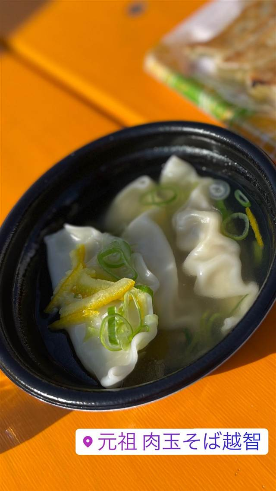

元祖 肉玉そば 越智（本店）
鶏・豚・牛の三獣スープに焼肉をのせた元祖・肉玉そば
元祖 肉玉そば越智
『肉玉そば』というジャンルを2010年に生み出した越智雄一氏が独立して開いた八街の本店。鶏・豚・牛の三獣スープに焼肉をのせた看板メニューは『日本一ご飯がすすむラーメン』として知られる。
TRIVIA
へえ、という話
- 『肉玉そば』というジャンル自体を2010年に考案した元祖
- 店主は師・塚田兼司氏から店づくりの想いを受け継いでいる
REVIEWS
みんなの声
90.334ラーメンDB
ラーメンデータベース 口コミ31件・最新 2026-07
| 創業 | 越智商事有限会社として2020年7月3日設立、八街本店 |
|---|---|
| 系譜 | 店主・越智雄一氏は2010年に北松戸で『肉玉そば おとど』（長野『気むずかし家』プロデュース）を創業。その後独立し、自らの名を掲げた『元祖肉玉そば越智』を設立。 |
| 看板 | 肉玉そば（鶏・豚・牛の三獣スープに香ばしい焼肉を乗せた看板メニュー） |
| こだわり | 鶏・豚・牛の三獣を合わせたスープに、香ばしく焼き上げた焼肉をのせるのが特徴。冷凍餃子や肉玉そばの通販も行う。 |
| 予算 | 昼 ～¥999 夜 ～¥999 |
| 場所 | 八街駅 千葉県八街市 |
| 注意 | 八街本店。オンライン通販あり。 |
食べたもの：水餃子(フェス)